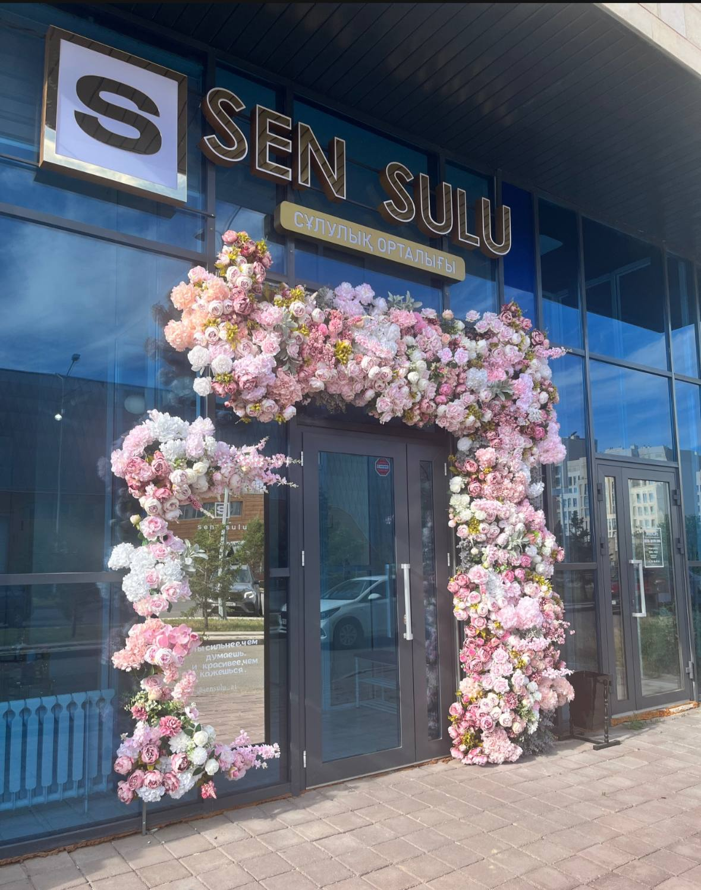
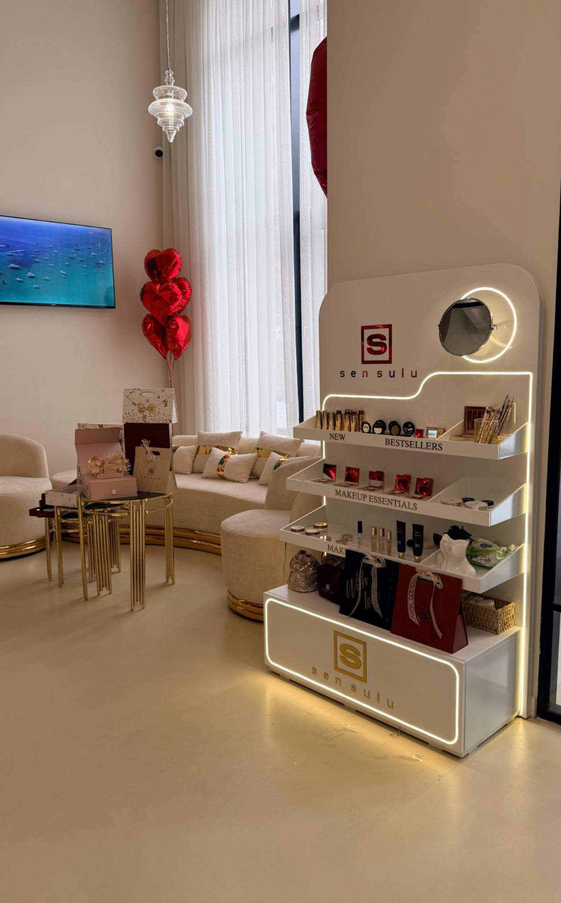

Sen Sulu was founded by Ainur Kabeldinova.
The brand started with a goal of creating high-quality cosmetics in Kazakhstan.
Over time, Sen Sulu developed from a local idea into an international cosmetics brand.
Today, its products are available in different regions of Kazakhstan and abroad.

These photographs were taken by the project team.
Entrance to the Sen Sulu cosmetics store.

These photographs were taken by the project team.
Cosmetics display inside the Sen Sulu store.
Our Mission
Sen Sulu aims to help women express their
natural beauty and confidence.
The brand creates modern decorative cosmetics that combine quality, style, and accessibility.
Its products are created in Kazakhstan for women who want to feel confident and comfortable with themselves.
Sen Sulu continues to develop while staying close to its main values.
Our Symbol
The symbol of Sen Sulu is harmony.
It represents the balance between strength and tenderness, confidence and kindness.
The phrase Sen Sulu is connected with the idea of beauty.
Charity
Sen Sulu also participates in charity projects and supports people who need help.
The company helps women, children, elderly people, and families facing difficult situations.
Charity has become an important part of the brand's values.
International Presence
Sen Sulu has expanded beyond Kazakhstan and is officially represented in eleven countries.
Its international presence shows how the brand has grown since its foundation.